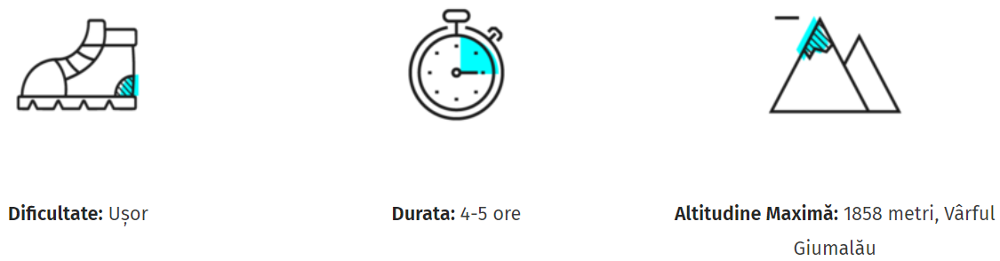
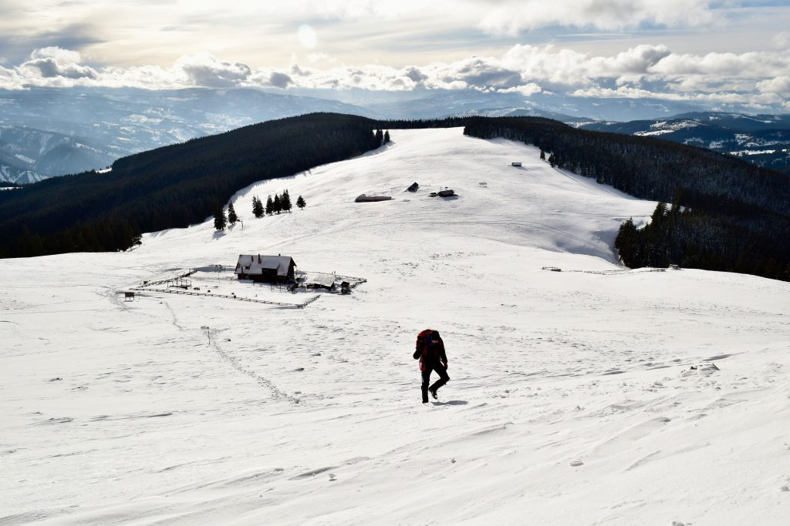
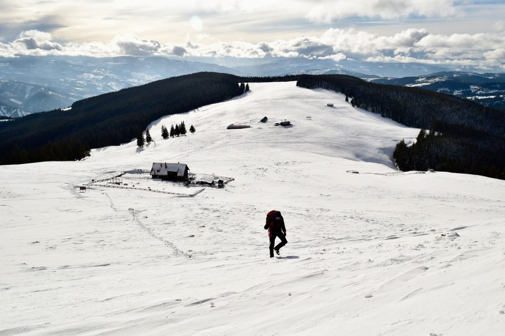

Traseul spre Varful Giumalau

.jpg) 

Traseul incepe prin padure de la Saua Fundului Corbului, avand mai multe
optiuni de a ajunge pana acolo. De pe vârful Giumalău te poți bucura de
priveliști spre Obcinile Bucovinei, Valea Bistriței, dar și spre munții
învecinați (în ordine, de la Nord-Est până la Vest): Rarăul, Ceahlăul,
Pietrosul Bistriței, Călimanii, Oușorul și Rodnei.
Traseul pe care urmeză să îl parcurgi este marcat cu o Bandă Roșie.
Din fericire, este des întâlnit, iar poteca este bine definită.
La capătul drumului și la începutul pădurii, urmează o intersecție.
Tot ce vei avea de făcut este să te îndrepți spre stânga, la 90
de grade, prin pădure.
Traseul alternează în ceea ce privește urcările și porțiunile pe curbă
de nivel (aproximativ plate). Deși sunt câteva urcări susținute,
nu trebuie să te sperie, iar cu răbdare vei reuși să le depășești fără probleme.
După aproximativ o oră jumătate de la plecare pe traseu, vei ajunge la o a doua
răscruce. Aici este întâlnirea (sau despărțirea) a două poteci: cea spre vârf
și cea spre Cabana Giumalău. Tot ce vei avea de făcut este să continui traseul
înainte, pe același marcaj, Bandă Roșie.
De altfel, acesta este și singurul traseu marcat la răscruce.La capătul drumului
și la începutul pădurii, urmează o intersecție. Tot ce vei avea de făcut este
să te îndrepți spre stânga, la 90 de grade, prin pădure. De altfel, acesta
este și singurul traseu marcat la răscruce.
Va începe o porțiune care urcă constant, printre jnepeni, ca într-un mic labirint.
Aceasta este singura zonă care îți poate pune probleme în cazul în
care nu vei fi atent unde calci.